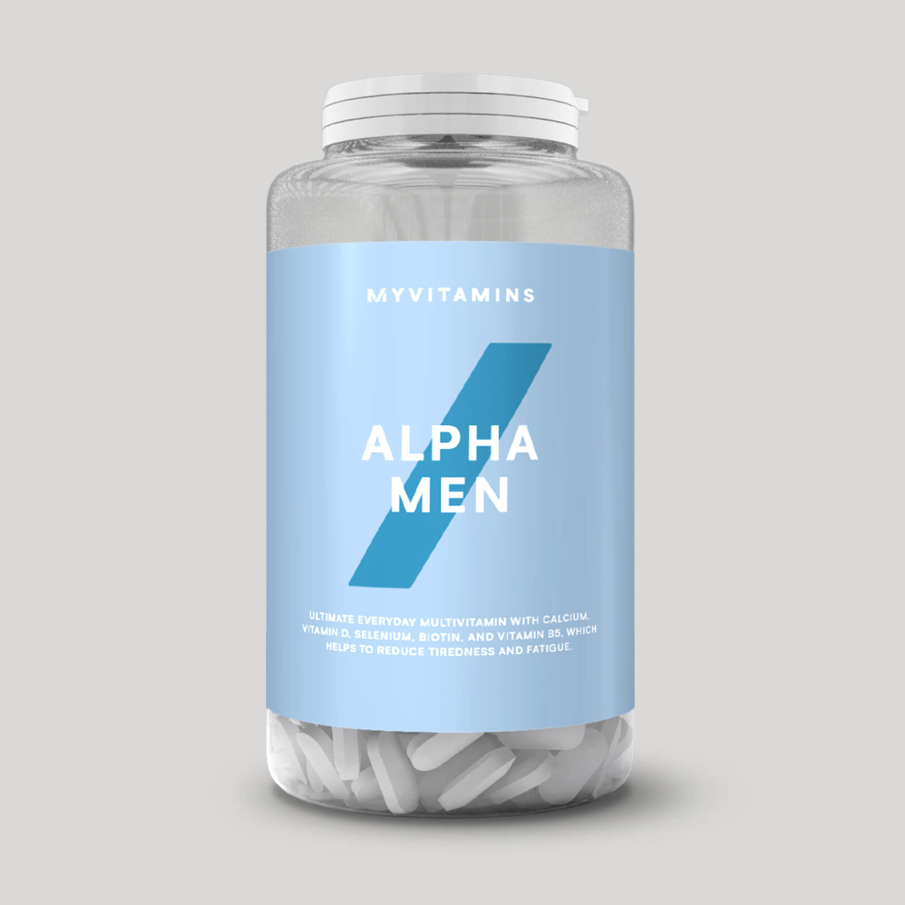

De ce vitaminele naturale sunt mai bune?
Exista o diversitate mai mare de alimente disponibile decat in orice moment al istoriei, insa un procent semnificativ din populatia globala se confrunta cu problema deficientelor nutritive. Organizatia Mondiala a Sanatatii estimeaza ca peste doua miliarde de oameni (sau 30% din populatia globala) sufera de anemie, insa carentele alimentare nu sunt doar o problema a tarilor aflate in curs de dezvoltare.
Stilul modern de viata, mancatul pe fuga si tentatia fast-food-urilor ne expun riscului de a exclude grupe alimentare intregi din dieta zilnica. Suplimentele alimentare sunt o optiune comoda pentru a ne asigura ca organismul beneficiaza de un aport echilibrat de vitamine si minerale esential, dar solutia pentru o dieta echilbrata nu se rezuma doar la administrarea unei pilule. Inainte de a alege tipul de supliment potrivit nevoilor organismului, aflati care sunt diferentele dintre vitaminele sintetice si cele naturale, dar si beneficiile fiecarui tip de vitamine.
Vitaminele si mineralalele sunt doua tipuri de micronutrienti esentiali pentru buna functionare a organismului, insa nu doar efectele lor asupra organismului ar trebui sa ne influenteze alegerea, ci si sursa de provenienta. Vitaminele si mineralele pot fi de doua tipuri: cele sintetice, dezvoltate in laboratoare farmaceutice prin reconstructia chimica a moleculelor, sau cele naturale, extrase direct din surse organice. Nu doar sursa din care provin diferentiaza cele doua tipuri de micronutrienti, ci si modul in care actioneaza asupra organismului: in timp ce vitaminele naturale sunt in tractul digestiv si asimilate la nivelul intestinului subtire de receptori specifici, cele de provenienta sintetica sunt dezvoltate pentru a replica actiunea celor naturale asupra organismului.
Suplimentele nu ar trebui sa inlocuiasca insa o dieta echilibrata, deoarece alimentele nu contin doar vitaminele si mineralele esentiale, ci si aminoacizi si enzime care contribuie la absorbtia lor optima in organism. Fructele si legumele consumate in stare cruda, legumele frunzoase, leguminoasele si fructele oleaginoase sunt grupe alimentare care nu ar trebui sa lipseasca dintr-o dieta echilibrata. Chiar si intr-o dieta vegetariana, acestea acopera principalele grupe de micronutrienti esentiali, care nu pot fi produsi de organism: vitamine, minerale si acizi grasi mononesaturati. In procesul natural de digestie, antioxidantii, amino-acizii, enzimele din alimente functioneaza sinergic pentru a transforma nutrientii in forme care pot fi asimilate in organism si, ulterior, eliberate in sange. De exemplu, calciul nu este asimilat corespunzator in absenta vitaminei D - fara aceasta din urma, organismul nu poate produce suficient calcitrol, hormonul care influenteaza rata de absorbtie a calciului. Tocmai de aceea, suplimente de vitamine si minerale care nu asigura vitaminele si mineralele in forma izolata, ci combina actiunea mai multor nutrienti pentru a facilita absorbtia in organism.
In timp ce anumite vitamine, precum vitaminele B si C, sunt liposolubile (absorbite in fluidele corporale), vitamine precum A, D, E si K sunt stocate in depozitele de grasime din corp. Biodisponibilitatea, proportia in care nutrientii sunt asimilati in organism este principalul criteriu dupa care ar trebui sa ne ghidam in alegerea suplimentului alimentar potrivit nevoilor noastre.
Sursa de provenienta este unul dintre factorii care influenteaza biodisponibilitatea unui micronutrient. De exemplu, in cazul vitaminei C, majoritatea studiilor au revelat diferente in biodisponibilitatea vitaminei C provenita din surse sinetice si celei naturale. Conform datelor publicate, cercetatorii au constatat o concentratie de vitamina C intre patru si opt ori mai mare in organele analizate in cazul grupului caruia i s-a administrat vitamina C naturala, dar si singurul grup care nu prezenta leziuni asociate scorbutului. De asemenea, conform aceluiasi studiu, concentratia de vitamina C din plasma sanguina a persitat mai mult in comparatie cu grupul caruia i s-a administrat vitamina C de provenienta sintetica.
Mai mult de 90% dintre vitaminele disponibile pe piata sub forma de suplimente alimentare se incadreaza in categoria sintetica, informeaza un comunicat al Organic Consumers Association din Statele Unite. Rotta Natura va pune la dispozitie o gama varianta de suplimente nutritive de provenienta naturala, printre care si complexul de Calciu, Magneziu, Zinc si Vitamina D2 naturala, unul dintre cei mai puternici aliati pentru reechilibrare mentala si energizare.
Magneziul este implicat in peste 300 de procese metabolice in organism si este un mineral esential pentru buna functionare a sistemului nervos. Asociind actiunea magneziului cu cea a zincului, un oligoelement esential pentru procesele hormonale, regenerare celulara si buna functionare a sistemului imunitar, complexul nutritiv contribuie la mentinerea sanatatii psihice si reducerea efectelor negative ale oboselii si extenuarii. Formula complexului include, de asemenea, calciu si vitamina D2 de provenienta naturala, doi nutrienti esential pentru sanatatii sistemului muscular si osos.
Vitamina C Plus
Vitamina C este o vitamină esențială solubilă în apă, implicată într-o mulțime de funcții vitale ale organismului, iar tabletele noastre de mare putere sunt ideale pentru acoperirea necesarului zilnic — te ajută să te simți în formă maximă zi de zi.
Multivitamine
Este o modalitate excelentă de a-ți crește aportul de vitamine și minerale și îți completează dieta normală. Oricare ar fi obiectivele tale de fitness, acest amestec este ideal pentru a te ajuta să îți păstrezi ritmul și agerimea1 în ciuda unui stil de viață trepidant.

Multivitamine Alpha Men
Ultraformula noastră de vitamine și minerale esențiale, inclusiv calciu, vitamina D, seleniu, vitamina B5, biotină, precum și extracte naturale energizante3 - îți crește starea de bine pe parcursul antrenamentelor grele și te ajută să faci față stresului unui stil de viață trepidant.
Multivitamine zilnice
Fiecare comprimat conține șapte vitamine esențiale, printre care vitamina A, C, D3, E, tiamină, riboflavină și niacină - ajutând la susținerea bunăstării tale zilnice și a unui program de antrenament dezordonat.